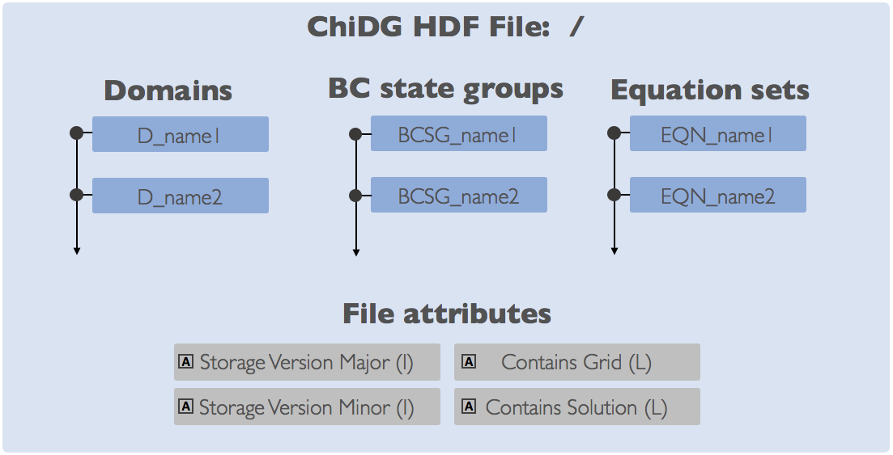

Input/Output¶
ChiDG HDF File Format¶
The ChiDG file format uses HDF5 as the storage container for Grid, Solution, and some configuration data. As such, ChiDG stores data in the HDF5 structure as Groups, Datasets, and Attributes. The main groups are identified on the file root using a prefix string. These groups along with their prefixes are:

- Domains (
D_)- Boundary condition state groups (
BCSG_)- Equations (
EQN_)
{kind=link}
Domains (D_)¶
A domain in the file corresponds to the domain_t data structures and nomenclature
in the ChiDG library itself. Domains in the ChiDG file are located on the file
root(/), are marked with a leading prefix D_, and contain the groups, Grid,
Patches, Fields. If a file contained a domain named box, the following HDF group
paths would exist: /D_box/Grid, /D_box/Patches, /D_box/Fields. It is recommended
to use the ChiDG file API for reading/writing domain data.
{kind=link}
Grid¶
The grid consists of:
- nodes
- element connectivities
These are represented using four datasets, Coordinate1, Coordinate2, Coordinate3, Elements.
Note
Nodesare an unstructured list of discrete points from which elements can be constructed.Coordinates123are the physical coordinate values of the nodes.Elementscontains a connectivity array for each element on the domain.
A slice of the Elements dataset is the connectivity information for a
given element. The format of this connectivity data is given as follows:
Note
Connectivity format:
connectivity(1) = Global domain index(idomain_g)connectivity(2) = GLobal element index(ielement_g)connectivity(3) = Element orderconnectivity(4:) = Element connectivityThe Element connectivity portion of the array is a list of integer
indices that correspond to nodes which represent the given element.
Coordinate1 |
Rank-1 array, H5T_NATIVE_DOUBLE, Coordinate-1 for nodes. |
Coordinate2 |
Rank-1 array, H5T_NATIVE_DOUBLE, Coordinate-2 for nodes. |
Coordinate3 |
Rank-1 array, H5T_NATIVE_DOUBLE, Coordinate-3 for nodes. |
Elements |
Rank-2 array, H5T_NATIVE_INTEGER, Element connectivities. Rank-1 = element index. Rank-2 = connectivity. |
Patches¶
Individual patches are located inside of the D_name/Patches group. Patch groups
use the prefix P_, so given a patch with the name inlet the following group could be
defined D_name/Patches/P_inlet.
{kind=link}
Patch group(P_) template.
Currently, domains
are constructed from block-structured grids, so six patches are created:
[XI_MIN, XI_MAX, ETA_MIN, ETA_MAX, ZETA_MIN, ZETA_MAX]. Each pach corresponds to
a group of faces on a single side of the block. Patches are used primarily as the
geometry portion of boundary conditions. A patch is associated with a boundary
condition state group in order to set up a boundary condition.
{kind=link}
Default patches generated by the chidg convert action.
Faces |
Rank-2 array, H5T_NATIVE_INTEGER, Face connectivities for all faces in the patch. |
Boundary State Group |
Attribute, String, Association of the patch with a boundary condition state group, BCSG_. |
Fields¶
Any volume fields defined for a given domain are located in the D_name/Fields group.
These could be both auxiliary (ex. wall distance) and primary (ex. Density) fields.
Datasets are stored directly on the Fields group. The data stored are the modal coefficients
of the basis function representation. That is, if a field \(Q\) is represented as an expansion in
basis functions \(\psi(\vec{x})\) as
The values stored in the field dataset are the modal coefficients, \(\hat{Q}\).
Note
The format for a domain field is a Rank-3 array:
- Rank-1 = nmodes
- Rank-2 = nelements
- Rank-3 = ntime
If one had read the dataset for a particular field into a Rank-3
array in working memory(my_array(:,:,:)), then the modal coefficients of that field
for element 2 at time instance 1 could be accessed as: my_array(:,2,1)
Note
For time-marching calculations, the size in Rank-3 for fields will be 1. The time-marching solution is written out to different files. So, even though many time steps are computed, only one is computed at a time. So, the third rank of the field storage is only of size 1.
For a time-spectral scheme like Harmonic Balance, the algorithm is solving directly for multiple instances in time and the solution is also multiple instances in time. So, the Rank-3 size for a time-spectral solution could be greater than 1 depending on the richness of the temporal solution space.
Boundary Condition State Groups (BCSG_)¶
Boundary conditions in ChiDG are composed of two separate parts; state and geometry.
Boundary Condition State Groups define the state portion of the
boundary conditions and are marked in the ChiDG root with the leading prefix BCSG_.
Boundary condition state groups can hold one or more Boundary Condition State functions,
BCS_. BCS_ groups in-turn can hold any number of Boundary Condition Parameters, BCP_.
In this way, boundary condition state groups are built through a composition of function
objects.
{kind=link}
Boundary condition state group(BCSG_) template.
Note
Sometimes a BCSG_ group will only contain a single BCS_ group. Consider the
case of an inlet boundary condition for the Euler equations. In this case, a single
BCS_ object may be defined to set the boundary state for each equation in the
Euler equations. So the BCSG_ object might contain just BCS_fluid_inlet.
Consider then an inlet boundary condition for the Reynolds-Averaged Navier-Stokes(RANS)
equations using a one-equation turbulence model. The same inlet BCS_fluid inlet object can
be used to define the boundary state for the primary Navier-Stokes equations. However,
an additional boundary condition state is required to define the turbulence equation.
An additional BCS_ object can be added that handles the definition for the extra
equation. So the BCSG_ object might contain both BCS_fluid_inlet and BCS_turb_inlet.
Boundary Condition State Function (BCS_)¶
Boundary Condition Parameters (BCP_)¶
Equations (EQN_)¶
Post-Processing & Visualization¶
TecIO¶
Given a ChiDG file containing a solution, a TecIO file can be created for visualization in Tecplot.
-
chidg post mesh_file.h5 solution_file.h5
vtkIO¶
Given a ChiDG file containing a solution, a vtkIO file can be created for visualization in Paraview.
-
chidg post mesh_file.h5 solution_file.h5
matplotlib¶
-
chidg matplotlib points.dat